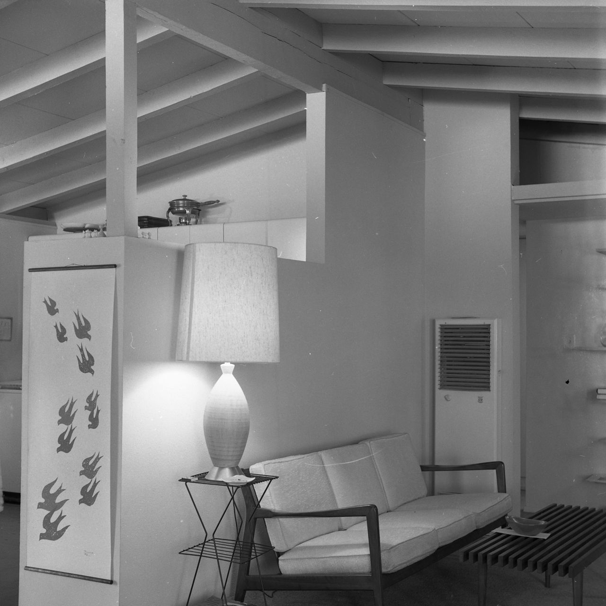
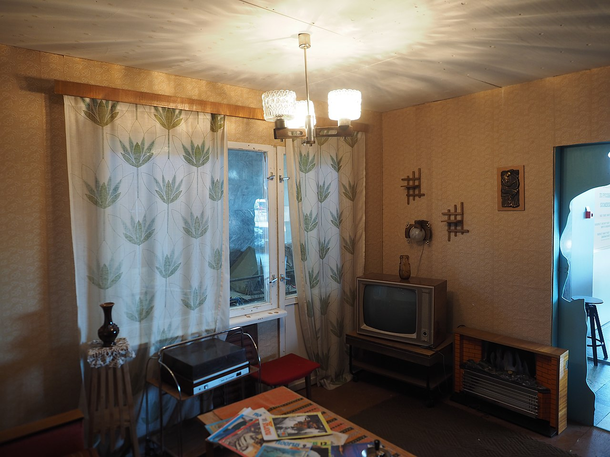
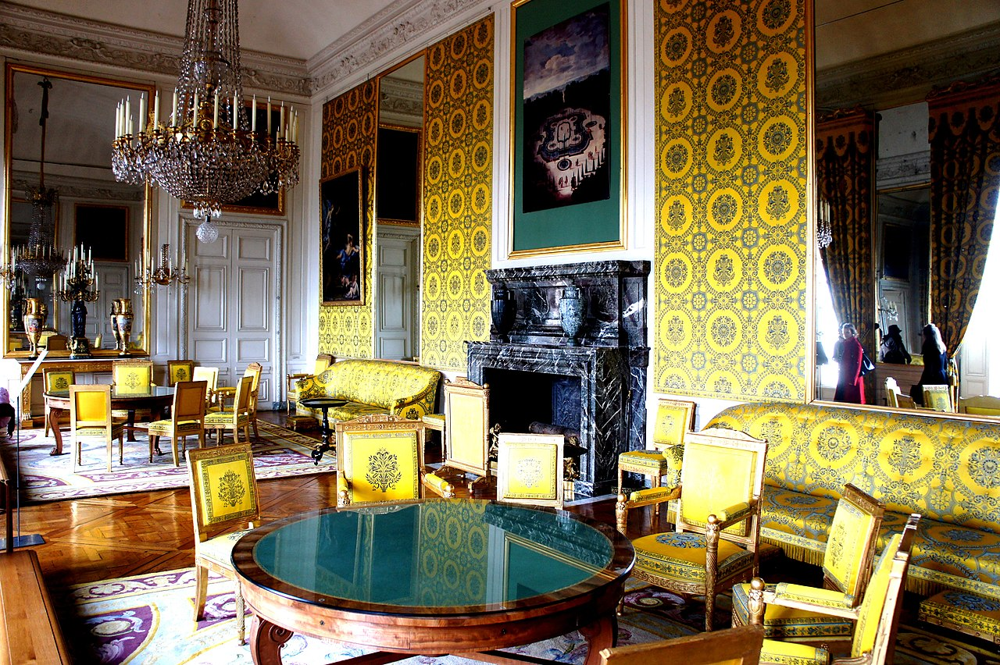
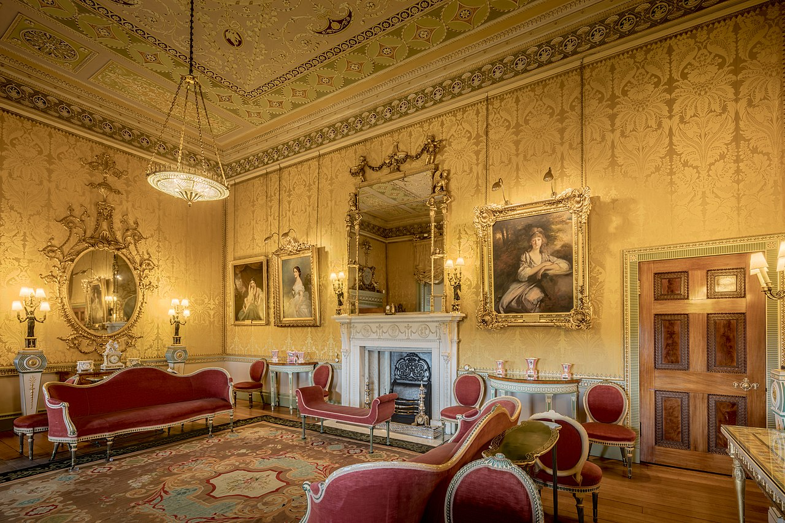
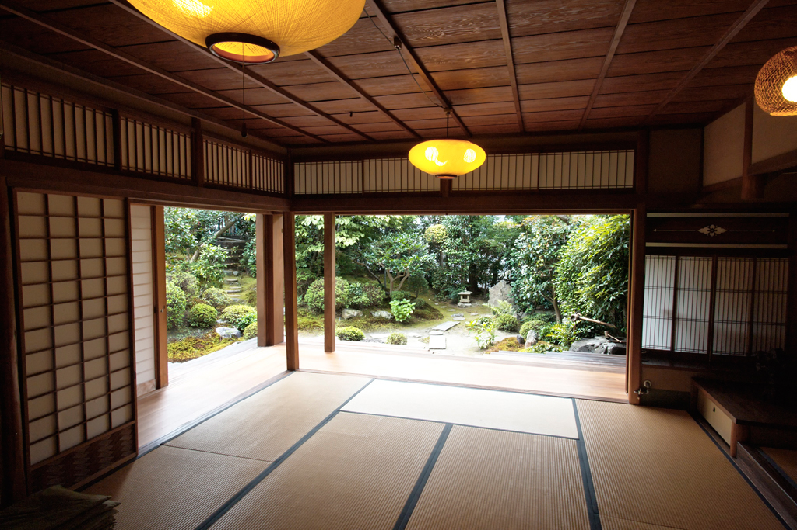
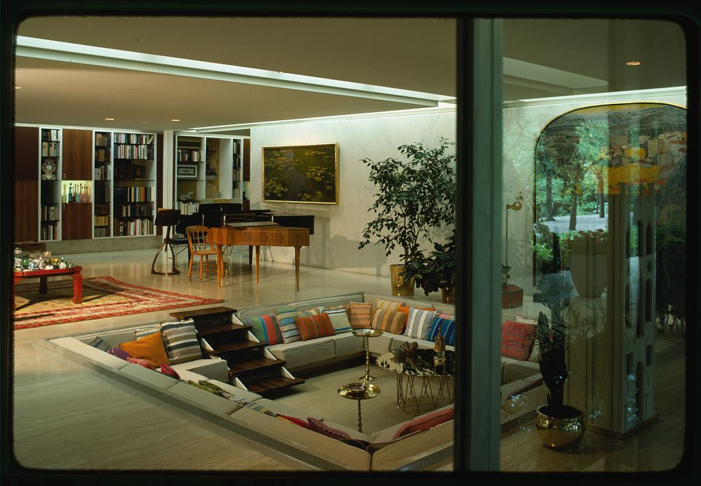

In homes that lack a parlour or drawing room, the living room may also function as a reception room for guests. Objects in living rooms may be used "to instigate and mediate contemplation about significant others, as well as to regulate the amount of intimacy desired with guests.

A typical Western living room may contain furnishings such as a sofa, chairs, occasional tables, coffee tables, bookshelves, televisions, electric lamps, rugs, or other furniture. Depending on climate, sitting rooms would traditionally contain a fireplace, dating from when this was necessary for heating. In a Japanese sitting room, called a washitsu, the floor is covered with tatami, sectioned mats, on which people can sit comfortably. They also typically consist of shoji, fusuma, and ramas which allow for the space to be very minimalistic and cohesive as the space allows users to clear their mind into complete Zen.

Japanese living room design concepts contradicted UK and New Zealand ideals in the way that Japanese culture believed in warming the person, instead of the home. This consisted of owning a portable hibachi for cooking needs rather than heating needs, meanwhile people in the UK and New Zealand used fireplaces to warm the space and not for cooking needs.

Until the late 19th century, the front parlour was the room in the house used for formal social events, including where the recent deceased were laid out before their funeral. This room had only traditionally been used on Sundays or for formal occasions such as the ceremonies of deceased family members before proper burial; it was the buffer zone between the public and private area within the house. Sundays are now more typically used for watching football on large color televisions caused larger family rooms to become more popular during the 1970s.

The term "living room" is found initially in the decorating literature of the 1890s, where a living room is understood to be a reflection of the personality of the designer, rather than the Victorian conventions of the day.Only the wealthy were able to afford several rooms within a space such as parlors, libraries, drawing rooms, and smoking rooms.

The change in terminology is credited to Edward Bok due to his accreditation of the magazine article, Home Journal. The article was specifically targeted to women and provided them with reliance of popular content in relation to home design at an affordable price and Bok's vision of the ideal American household and the roles of the women. Bok strongly believed that the space should be "lived" in rather than having an expensively furnished room that was rarely used within the household. He had promoted the new name to encourage people to use the room in their daily lives as a gathering space.